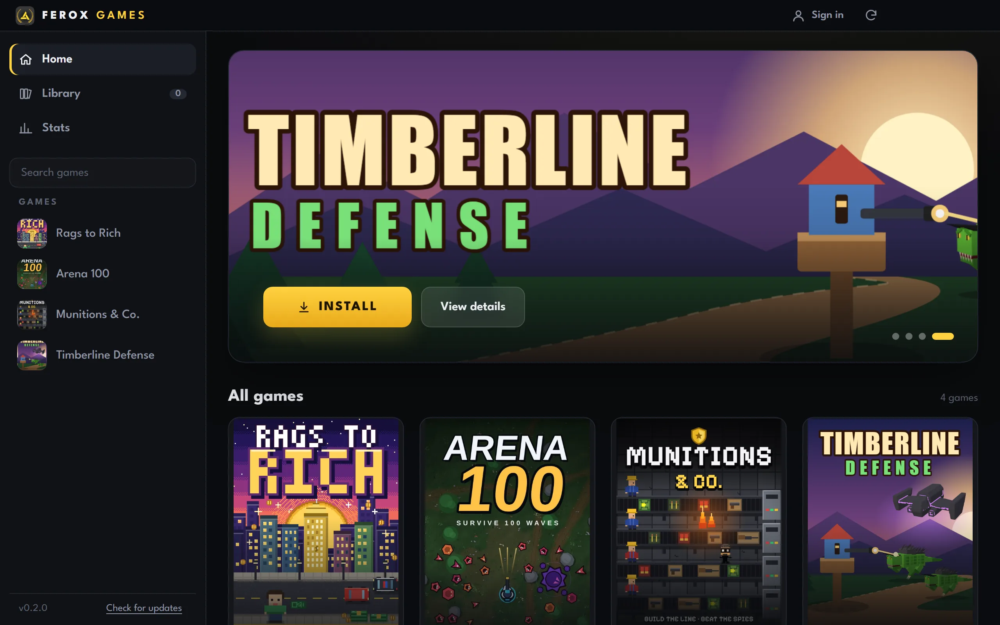
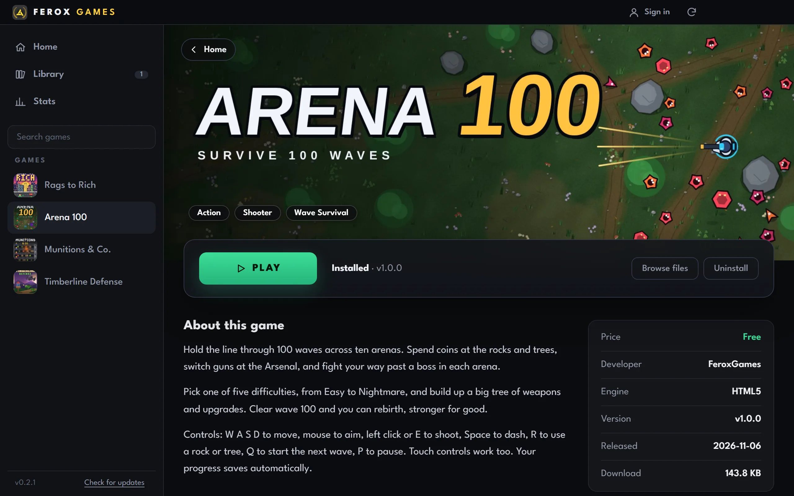
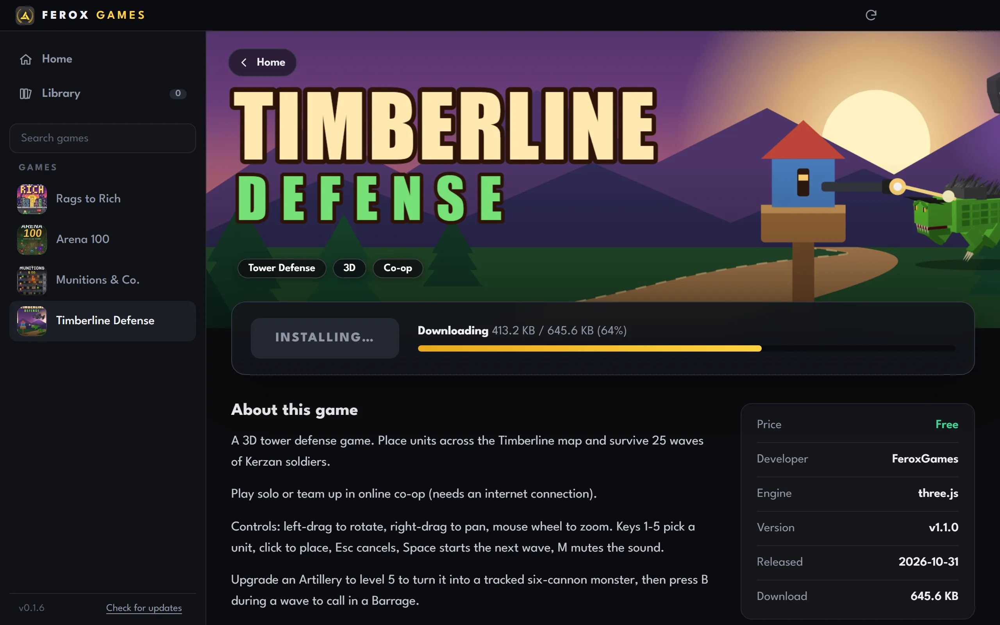

Every FeroxGames game in one place.
Install any game with one click and play it from the launcher. It updates itself, and it tells you when a game has a new version.
Download for WindowsFree · Version 0.1.7 · 116 MB · Windows 10 or 11
The launcher only runs on Windows PCs for now. Open this page on a Windows PC to install it.
Windows may warn you about the installer. Here's what to do.

Games in the launcher
The game list didn't load here, but you can still see every game in the launcher.
Inside the launcher


How to install
-
Download the installer
Your browser may say the file isn't commonly downloaded. If it does, choose Keep to carry on.
-
Open it
If you see "Windows protected your PC", click More info and then Run anyway to start the setup.
-
Pick a game
Open Ferox Launcher, choose a game and press Install to download it.
Why does Windows warn me?
The launcher isn't code-signed yet. Signing takes a paid certificate, and without one Windows treats the launcher as an app from an unknown publisher. The warning doesn't mean a virus was found. Only download the launcher from this page, so you know you have the real one.
Check your download
If you want to be sure the file is intact, its SHA-256 checksum should be:
89eef6b4453ff8482cef9257c792fe8c1c878025b6664fa1de9696ef3a24029a
To see your file's checksum, run this in PowerShell:
Get-FileHash "$env:USERPROFILE\Downloads\Ferox-Launcher-Setup-0.1.7.exe"